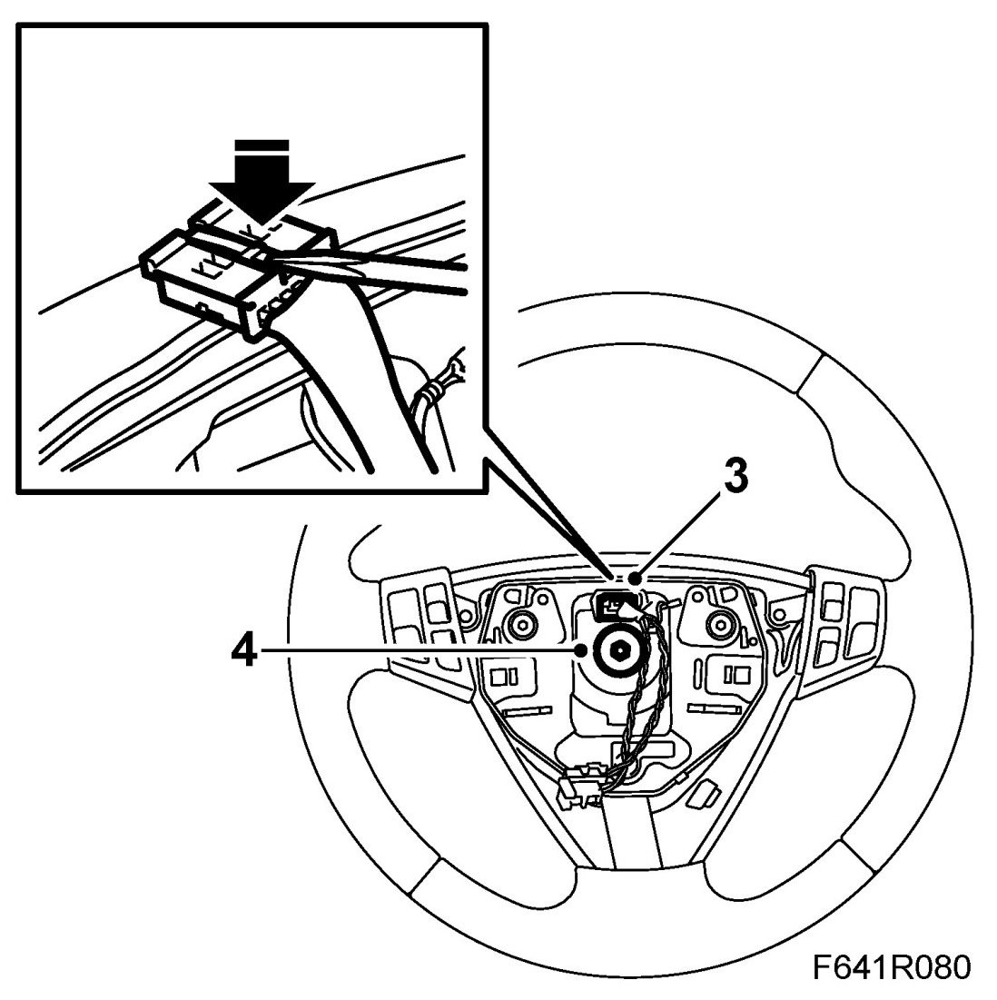
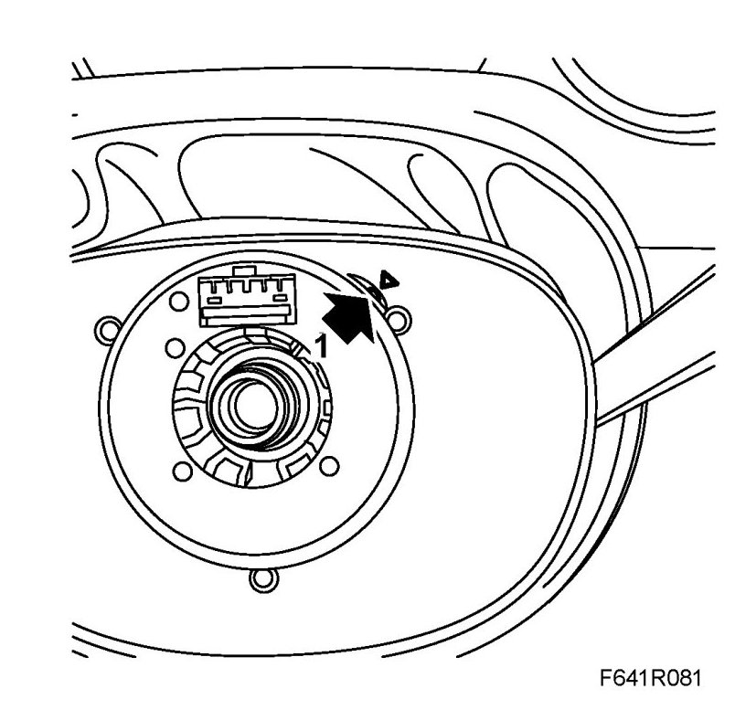
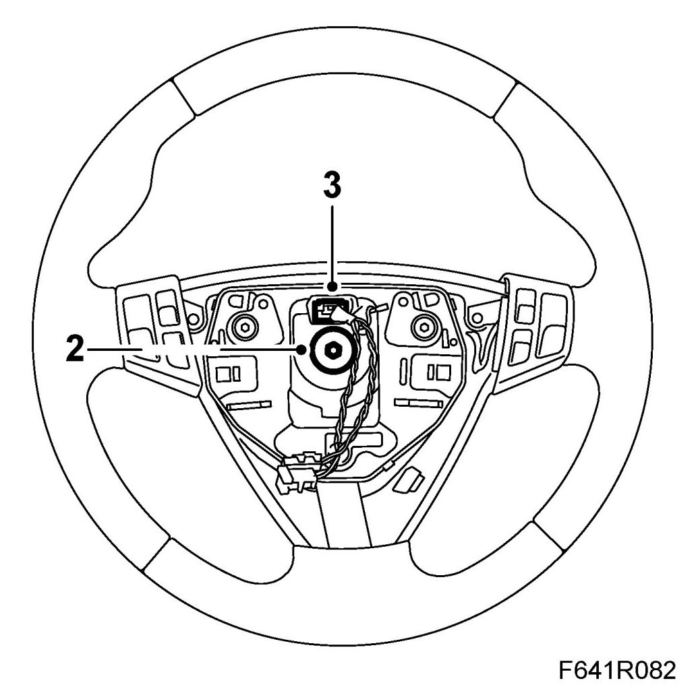

Steering Wheel
Steering Wheel
To remove
1. Remove Airbag, driver (333D) from the steering wheel.
2. Turn the steering wheel and wheels to the straight ahead position.
3. Remove the connector.

4. Remove the centre bolt from the steering wheel and lift off the steering wheel.
To fit
1. Make sure that the wheels are pointing straight ahead. Turn the contact roller so that the pointer is right in the middle of the indicator aperture. Fit the steering wheel on the steering shaft.
NOTE: Make sure the steering wheel fits the key on the steering shaft.

2. Apply 74 96 268 Thread locking adhesive and fit the centre bolt.
Tightening torque 50 Nm (37 lbf ft)

3. Fit the connector.
4. Fit Airbag, driver (333D).